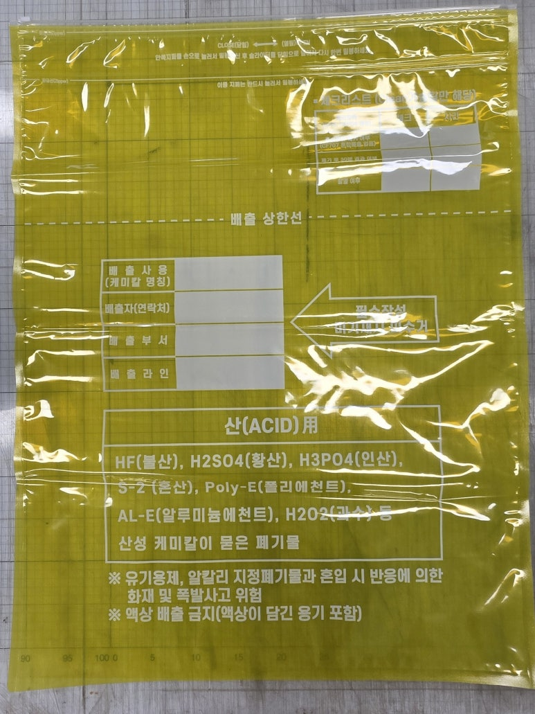
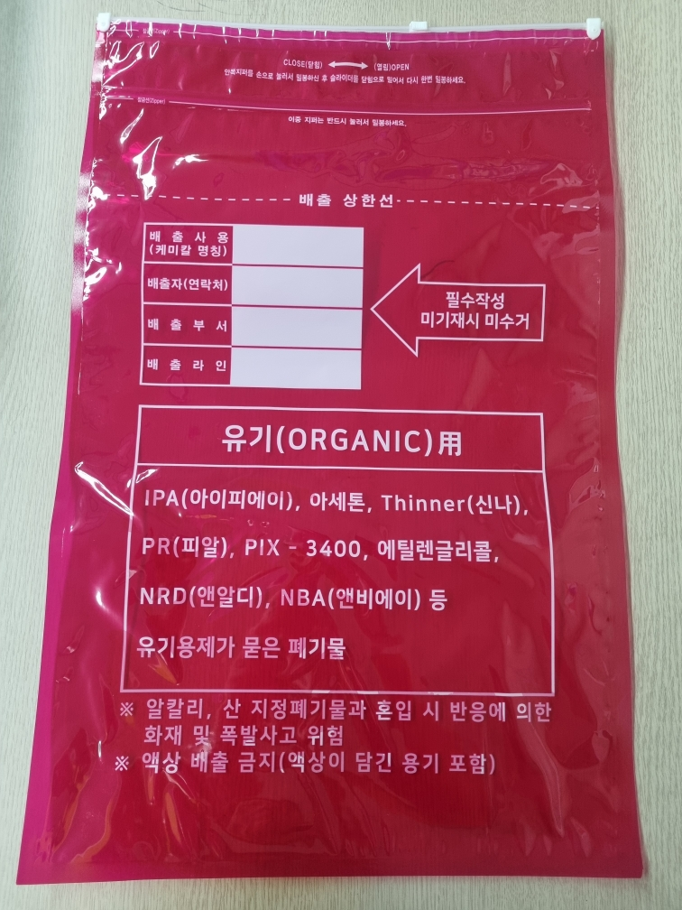

CHEMICAL WASTE ZIPPER BAG
산·알칼리·유기
3중 지퍼 폐기물 봉투
케미칼이 묻은 폐기물을 종류별로 구분할 수 있는 산업용 지퍼백입니다. 각 제품은 소·중·대 3가지 규격으로 공급합니다.
산 ACID


PRODUCT TYPES
제품 종류
ACID
산 폐기물 봉투
산성 케미칼이 묻은 폐기물
HF(불산), H2SO4(황산), H3PO4(인산), S-2(혼산), Poly-E, AL-E, H2O2(과수) 등산 폐기물 봉투 보기 →ALKALI
알칼리 폐기물 봉투
알칼리성 케미칼이 묻은 폐기물
KOH(수산화칼륨), NaOH(수산화나트륨), NH4OH(수산화암모늄), Slurry(슬러리) 등알칼리 폐기물 봉투 보기 →COMMON SPECIFICATION
공통 규격
소275 × 400mm반투명
중375 × 600mm반투명
대600 × 780mm반투명
- 재질
- PET12 + NY15 + LLDE85 삼중합지
- 형태
- 삼중 삼방지퍼백
- 특징
- 냄새 방지 기능 강화
폐기물의 성상과 사용 환경에 따라 적합성이 달라질 수 있습니다. 케미칼 자체 보관, 누액 방지, 내화학 성능은 별도 확인 없이 보증하지 않습니다.
B2B CONTACT
종류·규격·수량을
알려주세요.
전화 또는 이메일로 문의하시면 공급 조건을 안내해 드립니다.